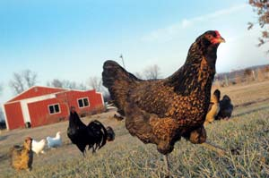
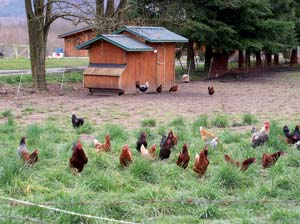
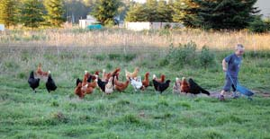
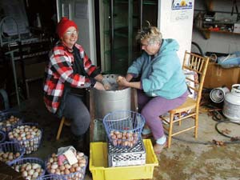
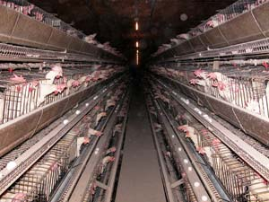
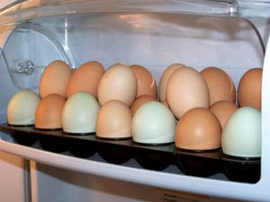
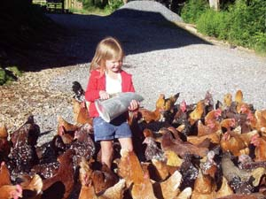
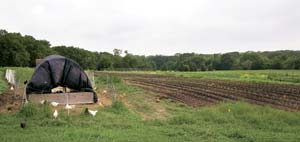

Most of the eggs currently sold in supermarkets are nutritionally inferior to eggs produced by hens raised on pasture. That’s the conclusion we have reached following completion of the 2007 Mother Earth News egg testing project. Our testing has found that, compared to official U.S. Department of Agriculture (USDA) nutrient data for commercial eggs, eggs from hens raised on pasture may contain:
• 1/3 less cholesterol
• 1/4 less saturated fat
• 2/3 more vitamin A
• 2 times more omega-3 fatty acids
• 3 times more vitamin E
• 7 times more beta carotene
These amazing results come from 14 flocks around the country that range freely on pasture or are housed in moveable pens that are rotated frequently to maximize access to fresh pasture and protect the birds from predators. We had six eggs from each of the 14 pastured flocks tested by an accredited laboratory in Portland, Ore. The chart at the end of this article shows the average nutrient content of the samples, compared with the official egg nutrient data from the USDA for “conventional” (i.e. from confined hens) eggs. The chart lists the individual results from each flock.
The 2007 results are similar to those from 2005, when we tested eggs from four flocks all managed as truly free range. But our tests are not the first to show that pastured eggs are more nutritious - see “Mounting Evidence” below for a summary of six studies that all indicated that pastured eggs are richer in nutrients than typical supermarket eggs.
We think these dramatically differing nutrient levels are most likely the result of the different diets of birds that produce these two types of eggs. True free-range birds eat a chicken’s natural diet - all kinds of seeds, green plants, insects and worms, usually along with grain or laying mash. Factory farm birds never even see the outdoors, let alone get to forage for their natural diet. Instead they are fed the cheapest possible mixture of corn, soy and/or cottonseed meals, with all kinds of additives - see “The Caged Hen’s Diet” below.
The conventional egg industry wants very much to deny that free-range/pastured eggs are better than eggs from birds kept in crowded, inhumane indoor conditions. A statement on the American Egg Board’s Web site says “True free-range eggs are those produced by hens raised outdoors or that have daily access to the outdoors.”
Baloney. They’re trying to duck the issue by incorrectly defining “true free-range.” And the USDA isn’t helping consumers learn the truth, either: “Allowed access to the outside” is how the USDA defines “free-range.” This inadequate definition means that producers can, and do, label their eggs as “free-range” even if all they do is leave little doors open on their giant sheds, regardless of whether the birds ever learn to go outside, and regardless of whether there is good pasture or just bare dirt or concrete outside those doors!
Both organizations need to come clean. True free-range eggs are those from hens that range outdoors on pasture, which means they can do what’s natural - forage for all manner of green plants and insects.
The Egg Board statement goes on to say: “The nutrient content of eggs is not affected by whether hens are raised free-range or in floor or cage operations.”
Again, that is hogwash. They think they can simply ignore the growing body of evidence that clearly shows that eggs are superior when the hens are allowed to eat their natural diet. Or maybe they think it’s OK to mislead the public to protect egg producers’ bottom line.
After we published our first report about the high nutrient levels in pastured eggs, the Egg Nutrition Council questioned our “suggestion” that pastured eggs were better in their Aug. 8, 2005, newsletter:
“Barring special diets or breeds, egg nutrients are most likely similar for egg-laying hens, no matter how they are raised.” There’s that double-speak, again: “Barring special diets ...” Since when are diets not a part of how chickens are raised? Come on, people, we’ve cited six studies (see "Mounting Evidence", below) showing that pastured eggs are better. The best you can say is “most likely” this evidence is wrong? Cite some science to support your assertions! The U.S. Poultry and Egg Association offers the same misleading statement on its Web site:
“What are free-range eggs? Free-range eggs are from hens that live outdoors or have access to the outdoors. The nutrient content of eggs from free-range hens is the same as those from hens housed in production facilities with cages.”
It’s amazing what a group can do with a $20 million annual budget. That’s what factory-farm egg producers pay to fund the AEB each year to convince the public to keep buying their eggs, which we now believe are substandard.
The Egg Board’s misleading claims about free-range/pastured eggs pervade the Internet, even though the Board has been aware of the evidence about the nutrient differences at least since our 2005 report. We found virtually the same (unsubstantiated) claim denying any difference in nutrient content on Web sites of the American Council on Science and Health (an industry-funded nonprofit), the Iowa Egg Council, the Georgia Egg Commission, the Alberta (Canada) Egg Producers, Hormel Foods, CalMaine Foods and NuCal Foods (“the largest distributor of shell eggs in the Western United States”).
But the most ridiculous online comments turned up at www.supermarketguru.com, a site maintained by a “food trends consultant.” It says:
“FREE RANGE: Probably the most misunderstood of all claims, it’s important to note that hens basically stay near their food, water and nests, and the idea of a happy-go-lucky bird scampering across a field is far from the natural way of life. The claim only means that the hens have access to the outdoors, not that they avail themselves of the opportunity. The hens produce fewer eggs so they are more expensive; higher product costs add to the price of the eggs. The nutrient content is the same as other eggs.”
If you’ve ever been around chickens, you know that whoever wrote that hasn’t. Chickens will spend almost their entire day ranging around a property scratching and searching for food. Even as tiny chicks, they are naturally curious and will begin eating grass and pecking curiously at any insects or even specks on the walls of their brooder box. “Scampering across a field,” looking for food, is precisely their natural way of life.
Supermarket Guru did get one thing right, though. Free-range/pastured eggs are likely to be more expensive because production costs are higher. As usual, you get what you pay for. If you buy the cheapest supermarket eggs, you are not only missing out on the valuable nutrients eggs should and can contain, you are also supporting an industrial production system that treats animals cruelly and makes more sustainable, small-scale egg production difficult.
You can raise pastured chickens easily right in your back yard - see our recent articles about how to do it here. Or you can find pastured eggs at local farmstands and farmers markets, or sometimes at the supermarket. Tell the store manager you want eggs from pastured hens, and encourage the manager to contact local producers. To find pastured producers near you, check out www.eatwild.com or www.localharvest.com.
"Customers get our eggs from the farm where they’re laid, so they see exactly how the hens live: in healthy, humane conditions." – Mark and Melissa Moeller, Misty Meadows Farm
"Your egg testing is real culture-changing stuff, and I applaud Mother Earth News in courageously moving forward with it." – Joel Salatin, Polyface Farm
"My best marketing tool is my customers, who regularly tell people that these are the best eggs they’ve ever had and worth every penny." – Patryk Battle, Sparkling Earth Farm
"We have many loyal customers who stand in line 30 minutes before the market opens to get our eggs." – George & Eiko Vojkovich, Skagit River Ranch
"We support Shady Grove Farm because it’s important to keep our local organic farmers thriving. Best of all, the eggs taste better, are better for you, and add amazing flavor (and color!) to our food." – Rachel Rose, restaurateur
"We preach to everyone that will listen: Don’t buy animal products unless you can see the way they’re raised. If everyone bought that way, there wouldn’t be industrial farms, and the small farmer could prosper again." – Bill and Sharon Moreton, Spring Mountain Farms
"We sell our eggs to several restaurant chefs - they’ll pay three or more times the price for pastured eggs over commercial." –David Smith, Springfield Farm
"I’m in this for the joy chickens bring and healthful eggs, not profit. Sitting on the porch watching the ladies in the yard is better than any therapy, so they’re worth at least $100 an hour to me." – Suzan Touchette, Windy Island Acres
"I’m so fortunate to get fresh eggs from heirloom hens that spend their days eating bugs, grass and weeds. Their eggs are the most flavorful I’ve ever eaten! Plus, I appreciate knowing how fresh they are." – Heidi Hunt, addicted to Red Stuga eggs
"It’s a real pleasure to return to eggs that have quality of taste, texture and looks. Now that I get the added benefit of less cholesterol and all the nutrition, I am simply delighted." – Danny G. Langdon, Misty Meadows maniac
Here’s the ingredients list from “16 percent Layer Crumbles,” a feed designed for hens raised in confinement: “Grain Products, Plant Protein Products, Processed Grain Byproducts, Roughage Products, Forage Products [in other words, could contain pretty much anything! - Mother], Vitamin A Supplement, Vitamin D3 Supplement, Vitamin E Supplement, Vitamin B12 Supplement, Riboflavin Supplement, Niacin Supplement, Calcium Pantothenate, Choline Chloride, Folic Acid, Manadione Sodium Bisulfite Complex, Methionine Supplement, Calcium Carbonate, Salt, Manganous Oxide, Ferrous Sulfate, Copper Chloride, Zinc Oxide, Ethylenediamine Dihydriodide, Sodium Selenite.”
|
 BRYAN WELCH Rancho Cappuccino; Lawrence, Kan. |
 GEORGE & EIKO VOJKOVICH Left to their own devices, chickens prefer to hang out in lush, green pastures rather than cramped, steel cages (these are from Skagit River Ranch of Washington). |
 MELISSA MOELLER/MILLER MEADOWS FARM These happy hens at Misty Meadows Farm in Washington produce eggs with quadruple the heart-healthy omega-3 fatty acids of conventional eggs! |
|
 DAVID SMITH/SPRINGFIELD FARM Pick pastured eggs to support local farms, such as Springfield Farm in Maryland, where the eggs have less than half the cholesterol of commercially raised eggs. |
 COMPASSION OVER KILLING Ise-America; Galena, Maryland |
 DENNIS DEACON Eggs from Harmony Hill in Virginia have six times more beta carotene than supermarket eggs. |
|
 BILL MORETON/SPRING MOUNTAIN FARMS Eggs from Spring Mountain Farms in Pennsylvania have 51/2 times the vitamin E of conventional eggs. |
 WILLIAM D. ADAMS When hens are allowed to roam and forage for their natural diet, they produce superior eggs. |
|